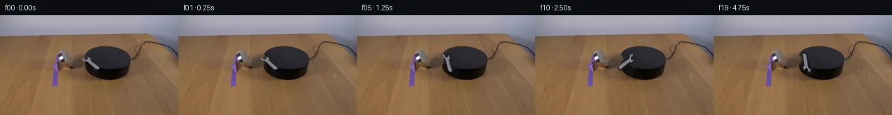

![首帧]()

Round 00
2026-11-05T02:19:21.330708+00:00像素候选变化代码 +203/−0inspection 更新
pixels 4ca3254a5ef0c065 · code c00e9c71716f9fd5
查看本轮 generate.py 真实 diff
--- previous/generate.py
+++ current/generate.py
@@ -0,0 +1,203 @@
+from pathlib import Path
+
+import cv2
+import numpy as np
+from PIL import Image, ImageDraw
+from scipy import ndimage
+
+import artifact_io
+
+
+ROOT = Path(__file__).resolve().parent
+SOURCE = ROOT / "first_frame.png"
+H, W = 144, 256
+PIVOT = (131.0, 68.0)
+ANGLES = np.array(
+ [0, 3, 8, 15, 24, 35, 47, 60, 74, 88,
+ 102, 116, 130, 144, 158, 172, 185, 198, 210, 222],
+ dtype=np.float32,
+)
+
+
+def extract_wrench(source: np.ndarray):
+ """Return reconstructed background, decontaminated foreground and alpha."""
+ rgb = source.astype(np.int16)
+ r, g, b = (rgb[:, :, i] for i in range(3))
+ lum = rgb.mean(axis=2)
+
+ roi = np.zeros((H, W), dtype=bool)
+ roi[55:82, 117:148] = True
+ neutral_range = np.maximum.reduce([r, g, b]) - np.minimum.reduce([r, g, b])
+ seed = (
+ roi
+ & (lum > 58)
+ & ((b - r) >= 3)
+ & (np.abs(r - g) < 18)
+ & (neutral_range < 42)
+ )
+
+ # Keep only the connected metal component passing through the wrench head.
+ labels, count = ndimage.label(seed, structure=np.ones((3, 3), dtype=np.uint8))
+ target_label = labels[64, 126]
+ if target_label == 0:
+ raise RuntimeError("Wrench seed was not found")
+ core = (labels == target_label).astype(np.uint8)
+ if count < 1 or not (105 <= int(core.sum()) <= 140):
+ raise RuntimeError(f"Unexpected wrench segmentation area: {core.sum()}")
+
+ kernel = np.ones((3, 3), dtype=np.uint8)
+ core = cv2.morphologyEx(core, cv2.MORPH_CLOSE, kernel)
+ ring1 = cv2.dilate(core, kernel, iterations=1)
+ ring2 = cv2.dilate(core, kernel, iterations=2)
+
+ alpha = np.zeros((H, W), dtype=np.float32)
+ alpha[ring2 != 0] = 0.22
+ alpha[ring1 != 0] = 0.62
+ alpha[core != 0] = 1.0
+ alpha = cv2.GaussianBlur(alpha, (3, 3), 0.55)
+ alpha[alpha < 0.025] = 0.0
+
+ # Telea inpainting only fills the compact patch formerly covered by metal.
+ removal = cv2.dilate(core, kernel, iterations=3) * 255
+ background = cv2.inpaint(source, removal, 3.0, cv2.INPAINT_TELEA)
+
+ # Undo edge compositing against the old background. At angle zero this makes
+ # the recovered foreground closely reconstruct the photographed wrench.
+ a = alpha[:, :, None]
+ foreground = source.astype(np.float32).copy()
+ valid = a[:, :, 0] > 0
+ recovered = (
+ source.astype(np.float32) - (1.0 - a) * background.astype(np.float32)
+ ) / np.maximum(a, 0.025)
+ foreground[valid] = np.clip(recovered[valid], 0, 255)
+ return background, foreground, alpha, core.astype(bool), removal.astype(bool)
+
+
+def rotate_layer(layer: np.ndarray, angle_deg: float, interpolation: int):
+ matrix = cv2.getRotationMatrix2D(PIVOT, -float(angle_deg), 1.0)
+ return cv2.warpAffine(
+ layer,
+ matrix,
+ (W, H),
+ flags=interpolation,
+ borderMode=cv2.BORDER_CONSTANT,
+ borderValue=0,
+ )
+
+
… diff truncated; 116 more lines …